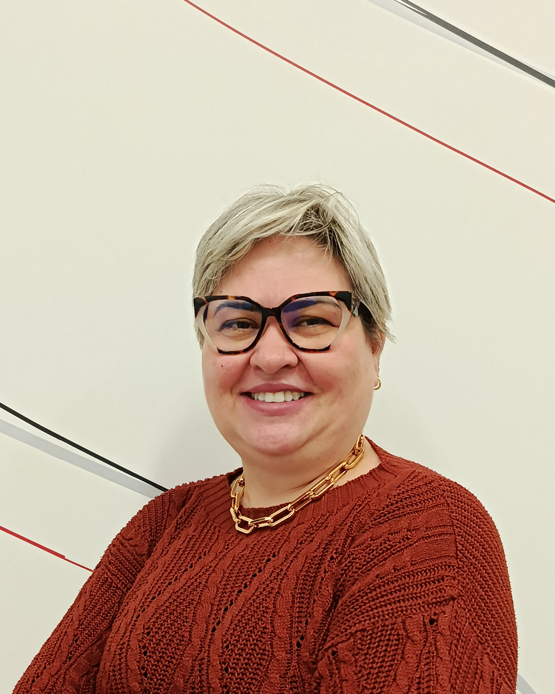

Valéria Aparecida da Silva
Gestão com Afeto e Propósito: A Liderança de Valéria na Direção Escolar
Para a pedagoga Valéria, atual diretora do SESI 242 de Vinhedo, a educação não é apenas uma escolha profissional — é seu projeto de vida. Sua caminhada até a gestão escolar foi construída passo a passo, pautada por intensa preparação acadêmica, dedicação diária e um profundo amor pelo processo de ensino-aprendizagem.
A trajetória de Valéria começou no chão da sala de aula, atuando por 19 anos na alfabetização, especialmente com turmas de 1º e 2º ano do Ensino Fundamental. Essa vivência prática no desenvolvimento inicial das crianças consolidou sua base pedagógica. Em 2021, buscando novos caminhos, participou de um processo seletivo que a levou, no ano seguinte, à coordenação pedagógica de uma escola vocacionada em Jundiaí.
Movida pelo desejo constante de se aprimorar, ingressou posteriormente no Programa Desenvolver, iniciativa da Rede SESI voltada para a formação e capacitação de futuros gestores. Após um período intenso de imersão, estudos de caso e vivências em diferentes unidades da rede, Valéria alcançou seu grande objetivo profissional: assumiu a direção da unidade do SESI em Vinhedo.
Ao olhar para trás, ela reconhece que o caminho exigiu resiliência para superar descrenças e provar seu valor como mulher e educadora. Para Valéria, um dos maiores desafios da gestão atual é acompanhar as transformações no modo como as novas gerações aprendem, exigindo atualização constante e estudo permanente para manter o engajamento dos estudantes.
"O que mais gosto é cuidar das pessoas: alunos, professores e toda a equipe, incluindo as áreas administrativa, de manutenção e de limpeza, contribuindo para que todos se sintam pertencentes e confortáveis." — Valéria, sobre a essência do seu trabalho na direção escolar
A maior fonte de inspiração para sua postura firme e acolhedora vem de sua mãe. Embora tenha tido poucas oportunidades formais de estudo, ela ensinou à filha uma lição valiosa que moldaria toda a sua vida: a de que o conhecimento é o único bem que ninguém pode nos tirar e a ferramenta essencial para conquistar a própria independência.
Realizada por ter marcado a vida de centenas de crianças ao ensiná-las a ler e escrever ao longo de quase duas décadas em sala de aula, Valéria hoje estende esse impacto para toda a comunidade do SESI de Vinhedo, liderando com proximidade e acolhimento.
Para a comunidade escolar, a diretora deixa uma mensagem calorosa sobre a essência do ambiente educativo: